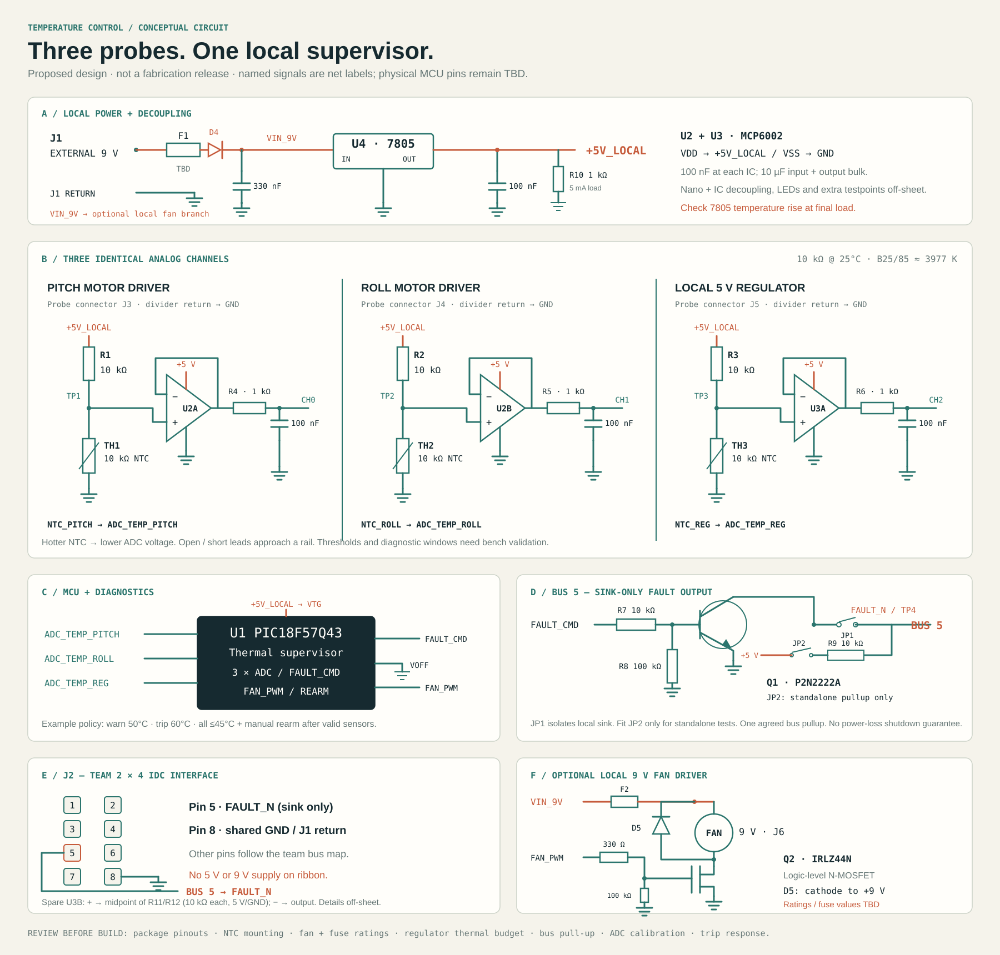

05 / CIRCUIT REFERENCE
A clear path from
probe to protection.
An editable circuit reference for the proposed temperature board. It documents design intent and must pass CAD and bench verification before fabrication.
Read the circuit.


01 / Build a quiet analog front end.
Each probe forms the lower leg of a 10 kΩ divider. As temperature rises, the NTC resistance and sense voltage fall. Three MCP6002 followers isolate the dividers from ADC sampling; each output reaches an ADC input through 1 kΩ with 100 nF to ground.
The RC time constant is 100 µs, giving a nominal 1.59 kHz corner. This addresses electrical noise; it does not remove the probe’s thermal lag. The selected thermistor lists an approximately 15-second thermal time constant under its reference conditions.
02 / Keep the fan off the logic rail.
The local 9 V input passes through coordinated fuse and reverse-polarity protection before splitting. The L7805ACV supplies 5 V logic. An optional 9 V fan uses its own branch and low-side MOSFET, local bypass, and appropriately rated catch diode.
Power the Nano through VTG with VOFF grounded as directed by its hardware guide. Keep external 5 V isolated from USB VBUS. Decoupling and grounding need a PCB review.
03 / Sink the fault line. Never drive it high.
Q1 is a P2N2222A with collector to FAULT_N through an isolation jumper, emitter to common ground, a 10 kΩ base resistor, and a 100 kΩ base pulldown. Provide one agreed pullup across the entire bus; the local 10 kΩ pullup is removable for standalone testing.
04 / Make the states explicit.
| State | Condition | Requested behavior |
|---|---|---|
| INITIALIZE | Boot or readings not yet valid | Assert fault while firmware initializes; no arm permission. |
| NORMAL | All channels valid and below warning | Release local fault request after valid arm sequence. |
| WARNING | Any channel ≥50°C (example) | Show warning; run optional fan. |
| TRIPPED | Any channel ≥60°C, open/short indication | Latch shutdown request; retain fan cooling while hot. |
| REARM | Manual action, all valid and ≤45°C | Clear local latch; master still controls system re-enable. |
Use endpoint guards in the resistance calculation, check every raw reading before filtering, and allow acquisition time after ADC channel changes. The example thresholds and a 10 ms scan target require validation against actual parts.